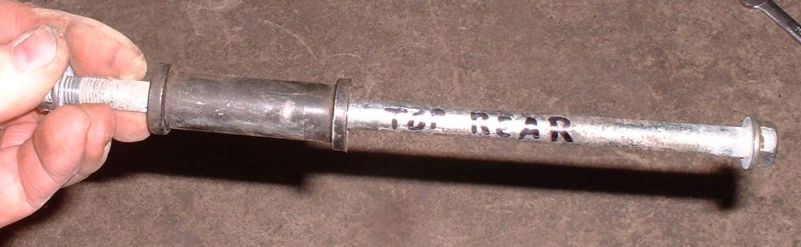
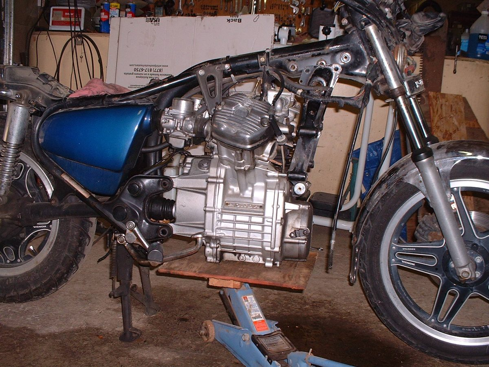
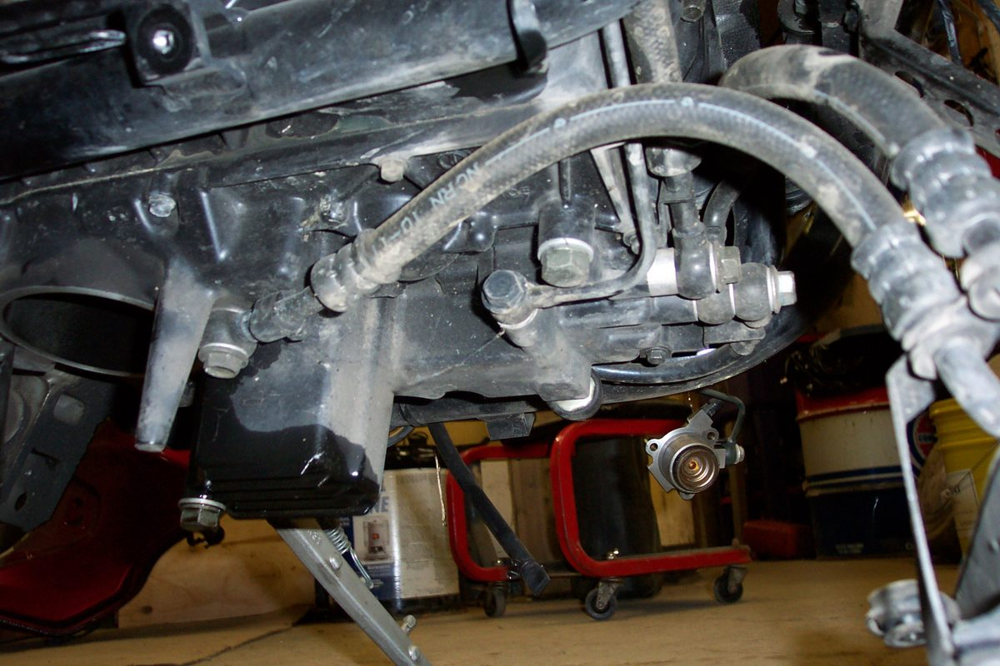
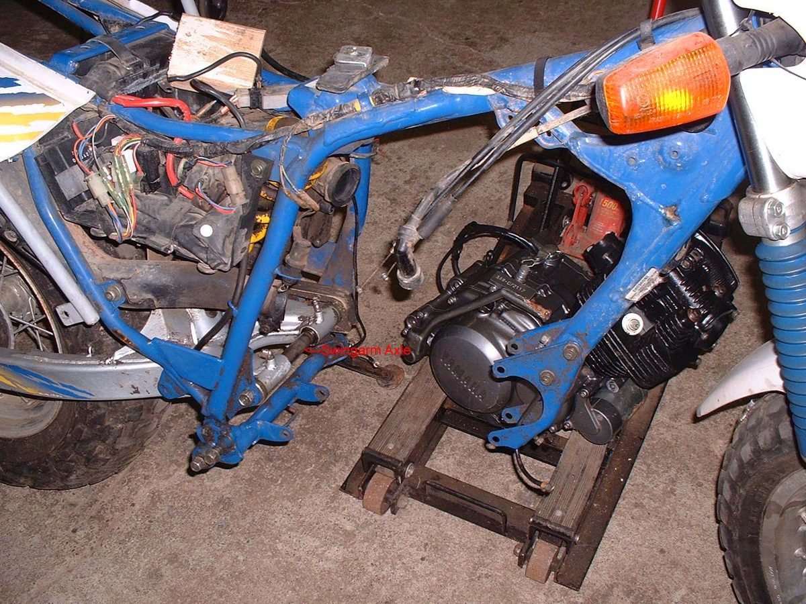
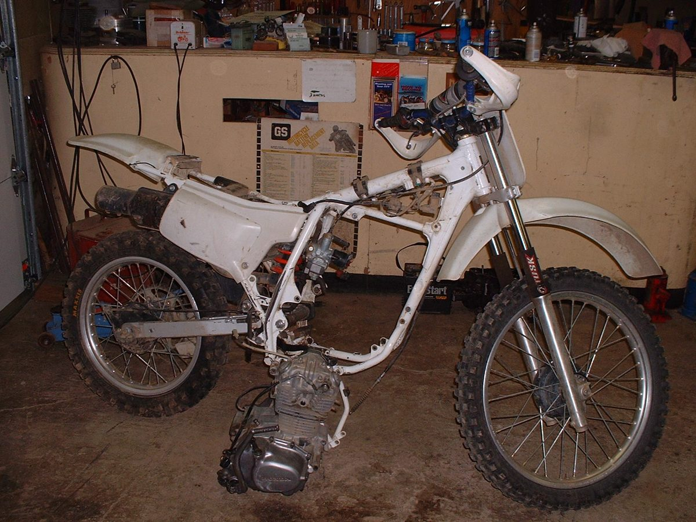

Many jobs can be done with the engine in the frame: the top end on most singles, the clutch, the alternator. Work on the crankshaft, the gearbox or the crankcase joint usually needs the engine out. The frame fits closely round the engine, so removal takes patience. Check the manual first: it says which jobs need the engine out and in what order the mounting bolts must be tightened.
Safety
- An engine is heavy. Use jacks and blocks, not your back. Get a helper for anything bigger than a small single.
- The bike must not fall when the engine comes out. Many bikes have no centre stand: tie the frame to a beam or a solid stand with straps, or support it on blocks.
- Pry only on thick, strong parts of the engine. A pry bar on a thin cover or crankcase wall can crack it.
- Drain fuel, oil and coolant into proper containers. Work cold.
You need
- Jacks, a board and wood blocks, straps, pry bar, long screwdrivers.
- A felt tip pen and a camera. New gaskets for the exhaust, fresh oil, filter and coolant.
- The torque values and bolt order from your bike's manual.
Steps
- Disconnect the battery, or remove it.
- Remove fairing parts and the screen, then the seat and the fuel tank.
- Drain the engine oil and remove the oil filter. On a liquid-cooled bike, drain the coolant and remove the radiator and hoses.
- While the frame still holds the engine, loosen any tight bolts you will need later (sprocket nut, clutch nut, flywheel nut).
- Remove breather and vent hoses. Disconnect the clutch cable, and the compression release cable if there is one. Take off the chain or the drive shaft joint.
- Remove the exhaust header pipes. Some silencers can stay on the frame.
- Unplug every electrical connector to the engine: alternator, pickup, neutral switch, starter, sensors. Check twice.
- Remove the carburettor or throttle body, or free it from the engine and leave it on the air box.
- Take photos of every hose, wire and cable route before you go further.
- Put a jack with a board under the engine and take the weight. If the underside is uneven, nail blocks to the board to match its shape.
- Remove all mounting bolts but one. Mark each one with its place (for example "front bottom"). Put its spacers and washers back on the bolt and run the nut on, so nothing is lost or mixed up.
- If the rear engine bolt is also the swingarm pivot, push a short bolt or a screwdriver through one side as the pivot comes out, so the frame and swingarm stay lined up.
- Remove the last bolt. Find the side the engine comes out (left, right or down) and move it out slowly, a little at a time, tilting it as needed. Lower it on the jack if it drops out of the bottom.
Refit
- Lift the engine into place on the jack and board, at the angle it came out.
- Fit the bolts loosely in their marked places with their spacers. With a shared swingarm pivot, tap the pivot in so it pushes the temporary bolt out.
- Tighten the mounting bolts in the order the manual gives, to the torque it gives.
- Refit everything else in reverse order. Use new exhaust gaskets. Refill oil and coolant.
Check your work
- No wire, hose or cable is trapped between engine and frame. Bars turn lock to lock without pulling any cable.
- Oil and coolant levels correct, no leaks after the first run.
- Clutch, throttle and chain adjusted. Mounting bolts checked again after the first ride (Check engine mounting bolts).
If it did not fix the problem
- Engine still will not turn: Find out where a stuck engine is locked.